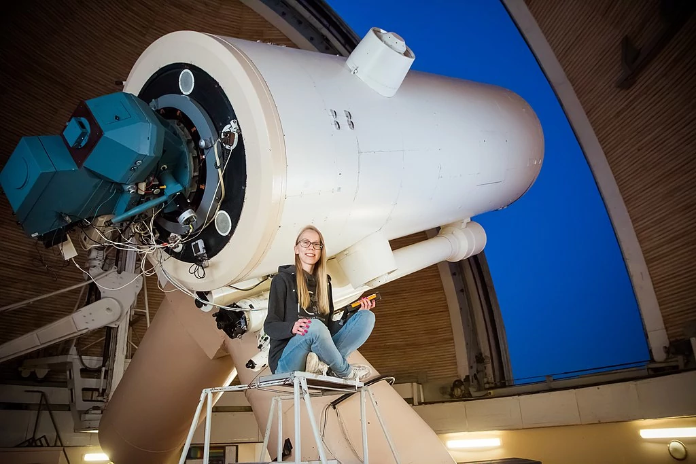

Anni Kasikov

Hello and welcome to my little corner of the internet!
I'm Anni, an astrophysics PhD student at University of Tartu, Estonia. I'm currently working at European Southern Observatory in Chile.
My research is in the field of massive stars, unraveling the evolution of yellow hypergiants. My supervisors are: Dr. Indrek Kolka (UT), Dr. Anna Aret (UT) and Dr. Andrea Mehner (ESO Chile).
I am a passionate observer!
I have worked at the 1.5 m telescope in Tartu Observatory and in 2021-2023 I was a student support astronomer at the Nordic Optical Telescope on La Palma.